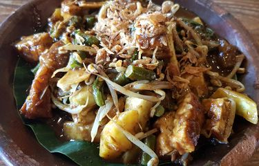

Rujak Cingur
Makanan khas Kota Surabaya

Bahan-Bahan:
- 300 gram cingur sapi
- 1 papan tempe goreng
- 5 kotak tahu goreng
- 2 ikat kangkung, petik daun lalu rebus
- 100 gram tauge rebus
- 1/2 buah nanas
- 1 buah bengkuang besar
- 1 buah timun
Bumbu:
- 150 gram kacang tanah
- 5 sdm petis udang
- 5 bawang putih
- 1 pisang kluthuk secukupnya aja
- 1 sdm bawang putih goreng
- Cabai rawit sesuai selera
- 2 sdm gula merah
- 1 sdt garam
- Air secukupnya
Cara Membuat:
-
Cingur sapi selama 2 jam, potong-potong lalu goreng sebentar (tidak
perlu kering).
-
Kupas nanas, cuci bersih, kupas bengkoang dan timun lalu cucu bersih.
Kemudian potong sesuai selera.
-
Bumbu: Ulek semua bumbu, lalu tambahkan air sedikit demi sedikit,
kekentalan sesuaikan selera, lalu koreksi rasa.
-
Cara penyajian: sajikan rujak cingur bersama lontong, kangkung, tauge,
tahu goreng, tempe goreng, nanas, bengkoang, timun dan siram dengan
bumbu, tambahkan kerupuk.
Sumber:
https://www.merdeka.com/sumut/11-resep-masakan-indonesia-tradisional-yang-otentik-lezat-dan-mudah-dibuat-kln.html